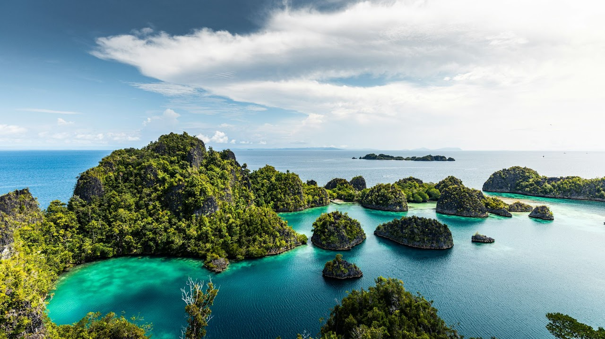
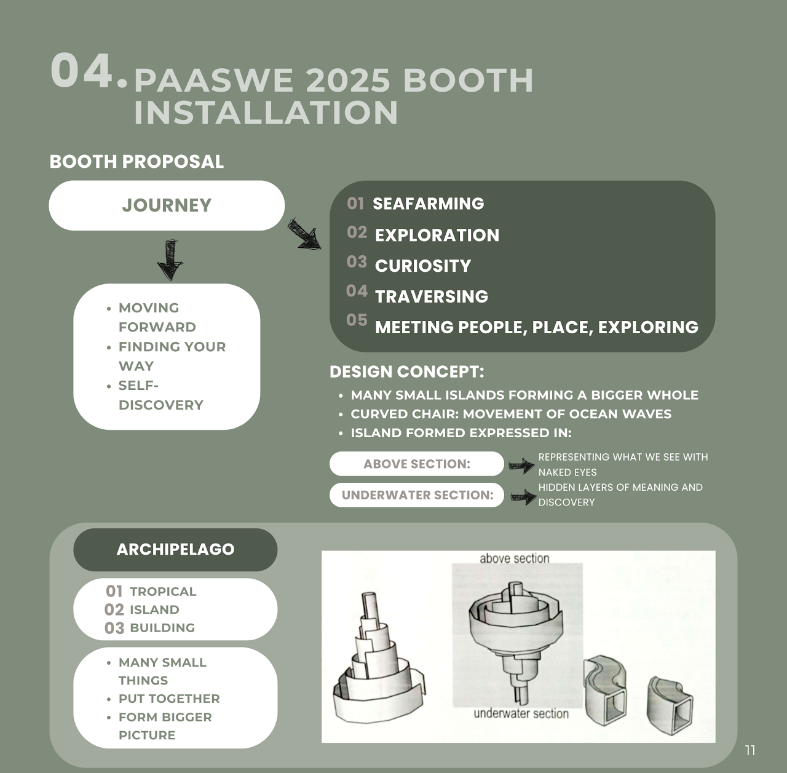
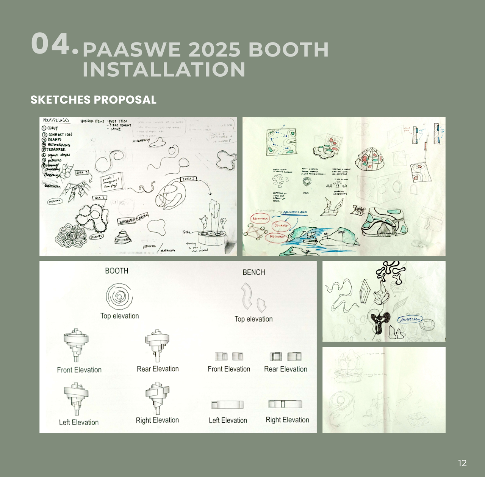

PAASWE2025 Booth & Bench Installation
Project 2 focuses on designing an installation of booth and bench for PAASWE 2025 under the theme 'Archipelago.' In groups, we were tasked to propose a booth design using sustainable and recycled materials as well as sponsored materials, first through sketch proposals and then a full-scale prototype. The final installation was showcased in the PAASWE 2025 student exhibition.

